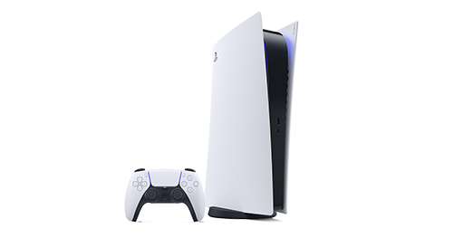
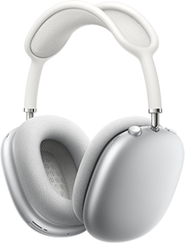

Products
Check what we have a watch out for here at TechWatch
PlayStation 5
Experience lightning-fast loading with an ultra-high speed SSD, deeper immersion with support for haptic feedback1, adaptive triggers1 and 3D Audio*, and an all-new generation of incredible PlayStation games.
AirPods Max
The over-ear headphone has been completely reimagined. From cushion to canopy, AirPods Max are designed for an uncompromising fit that creates the optimal acoustic seal for many different head shapes — fully immersing you in every sound.
Nintendo Switch OLED
The new system features a vibrant 7-inch OLED screen, a wide adjustable stand, a dock with a wired LAN port, 64 GB of internal storage, and enhanced audio.